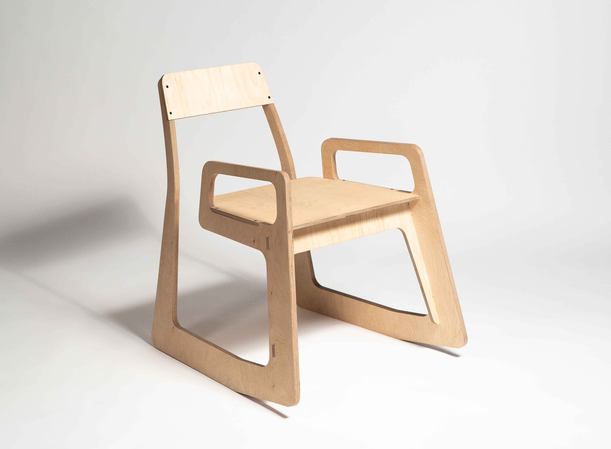
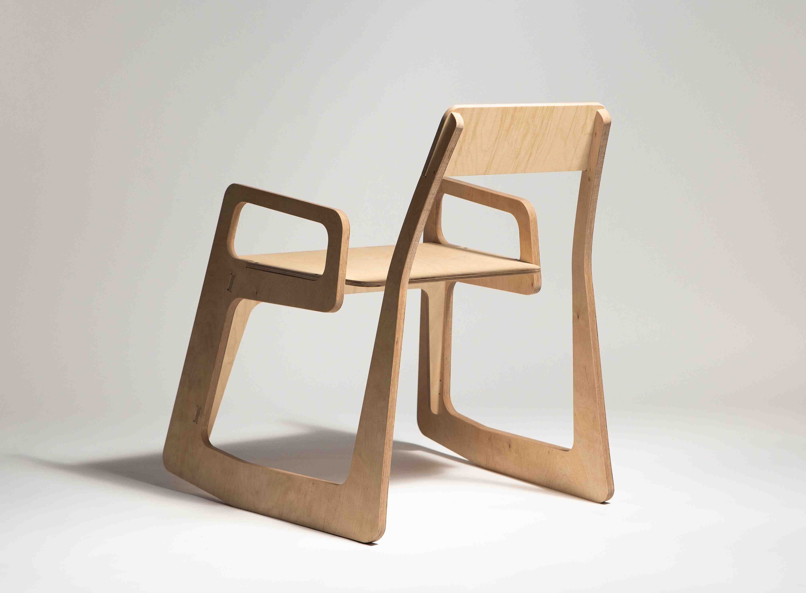

Digital Chair



What?
The task was to design a chair for a coope- ration with the Centre for Creativity and In- novation, LEONARDO, in Nuremberg. The chairs were to be used in the different areas of the co-working space in the end. The de-
signs ended up being made with the CNC milling machine.
Method?
I decided to design a cantilever chair, which is slanted at the front ends as a playful ad- ditional function, so that you can easily tilt back and forth. Thus you can change your sitting position very dynamically.